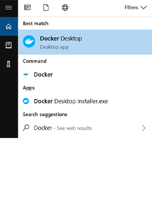

Server With Docker Tutorial
In this tutorial, I am going to install docker in Windows and Mac
Install Docker. The only component we have to install. Download the installer from the Windows, Mac download page and run it. After the installation, reboot the computer.
System Requirements
-
1. Windows 10 64-bit: Pro, Enterprise, or Education (Build 16299 or later).
2. For Windows 10 Home, see Install Docker Desktop on Windows Home.
- 3. Hyper-V and Containers Windows features must be enabled.
-
4. The following hardware prerequisites are required to successfully run Client Hyper-V on Windows 10:
- 5. 64 bit processor with Second Level Address Translation (SLAT)
- 6. 4GB system RAM
- 7. BIOS-level hardware virtualization support must be enabled in the BIOS settings. For more information, see Virtualization.
Install Docker Desktop on Windows
-
1. Double-click Docker Desktop Installer.exe to run the installer.
If you haven’t already downloaded the installer (
Docker Desktop Installer.exe), you can get it from Docker Hub. It typically downloads to yourDownloadsfolder, or you can run it from the recent downloads bar at the bottom of your web browser. -
2. When prompted, ensure the Enable Hyper-V Windows Features option is selected on the Configuration page.
-
3. Follow the instructions on the installation wizard to authorize the installer and proceed with the install.
-
4. When the installation is successful, click Close to complete the installation process.
-
5. If your admin account is different to your user account, you must add the user to the docker-users group. Run Computer Management as an administrator and navigate to Local Users and Groups > Groups > docker-users. Right-click to add the user to the group. Log out and log back in for the changes to take effect.
Start Docker Desktop
When the whale icon in the status bar stays steady, Docker Desktop is up-and-running, and is accessible from any terminal window.

If the whale icon is hidden in the Notifications area, click the up arrow on the taskbar to show it.
Settings
The Docker Desktop menu allows you to configure your Docker settings such as installation, updates, version channels, Docker Hub login, and more.
This section explains the configuration options accessible from the Settings dialog.
1. Open the Docker Desktop menu by clicking the Docker icon in the Notifications area (or System tray):

Select Settings to open the Settings dialog:

When the initialization is complete, Docker Desktop launches the onboarding tutorial. The tutorial includes a simple exercise to build an example Docker image, run it as a container, push and save the image to Docker Hub.

Congratulations! You are now successfully running Docker Desktop on Windows.
If you would like to rerun the tutorial, go to the Docker Desktop menu and select Learn.
Install Docker Desktop on Mac
System requirements
Your Mac must meet the following requirements to successfully install Docker Desktop:
-
1. Mac hardware must be a 2010 or a newer model, with Intel’s hardware support for memory management unit (MMU) virtualization, including Extended Page Tables (EPT) and Unrestricted Mode. You can check to see if your machine has this support by running the following command in a terminal:
sysctl kern.hv_support2. If your Mac supports the Hypervisor framework, the command prints
kern.hv_support: 1. -
3. macOS must be version 10.14 or newer. That is, Mojave or Catalina. We recommend upgrading to the latest version of macOS.
4. If you experience any issues after upgrading your macOS to version 10.15, you must install the latest version of Docker Desktop to be compatible with this version of macOS.
Note: Docker supports Docker Desktop on the most recent versions of macOS. Docker Desktop currently supports macOS Mojave and macOS Catalina.
5. As new major versions of macOS are made generally available, Docker stops supporting the oldest version and support the newest version of macOS.
-
6. At least 4 GB of RAM.
-
7. VirtualBox prior to version 4.3.30 must not be installed as it is not compatible with Docker Desktop.
Install and run Docker Desktop on Mac
-
1. Double-click
Docker.dmgto open the installer, then drag the Docker icon to the Applications folder.
-
2. Double-click
Docker.appin the Applications folder to start Docker. (In the example below, the Applications folder is in “grid” view mode.)
3. The Docker menu in the top status bar indicates that Docker Desktop is running, and accessible from a terminal.

4. If you’ve just installed the app, Docker Desktop launches the onboarding tutorial. The tutorial includes a simple exercise to build an example Docker image, run it as a container, push and save the image to Docker Hub.

-
5. Click the Docker menu (
 ) to see
Preferences and other options.
) to see
Preferences and other options. -
6. Select About Docker to verify that you have the latest version.
If you would like to rerun the tutorial, go to the Docker Desktop menu and select Learn.